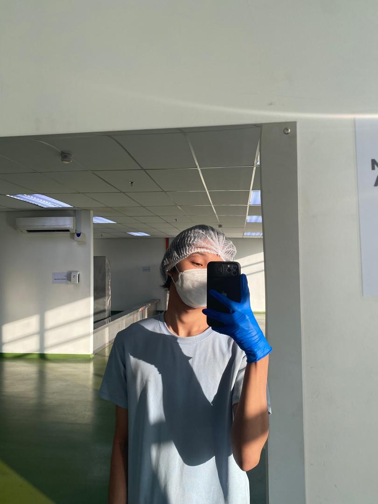
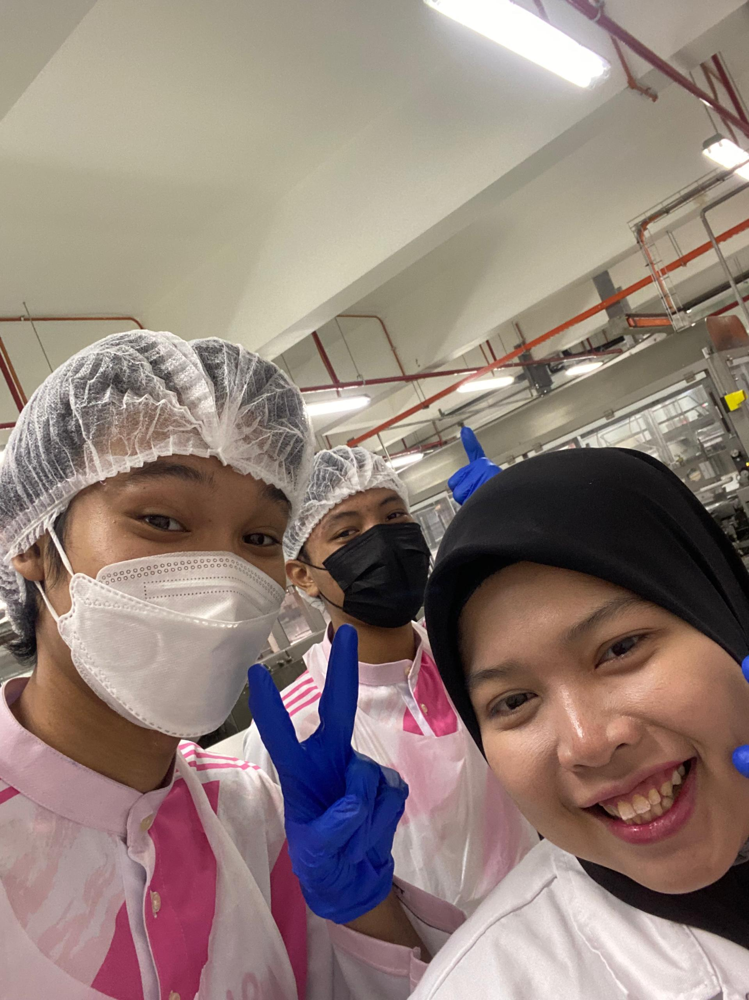
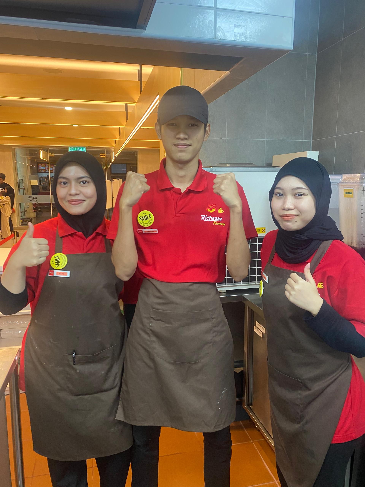
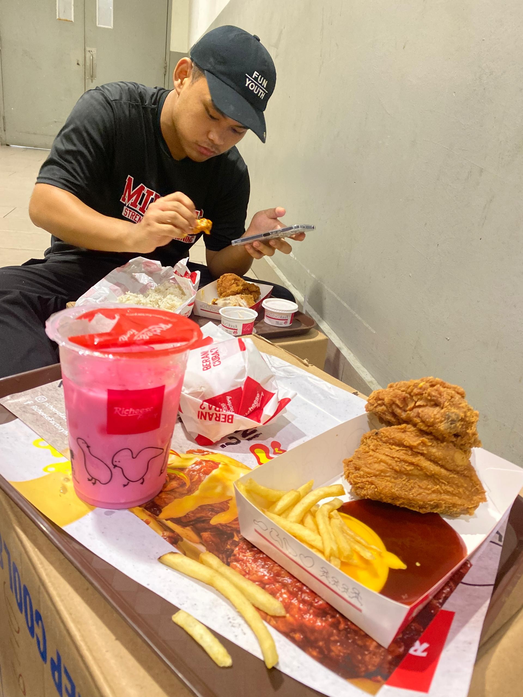
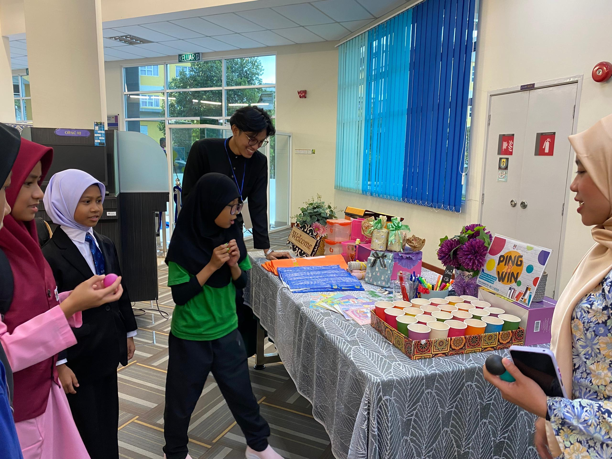

Experience






| Ribena Sdn BHd.Factory | Richeese Factory | Librarian (Uitm Pasir Gudang) | |||
|---|---|---|---|---|---|
| 5 Month ( After SPM ) | My experience working with people, I learned many things and I gained a lot of new knowledge about the outside world and from various people. Among the jobs I do are physically demanding jobs such as lifting flour weighing 50kg, pushing pallets, lifting nuts, working in the month of Ramadan, working in hot places, working overtime, having to adhere to time, working for 12 hours, work areas that away from home Among those things, I take it as an experience to spend my free time and earn pocket money | 2 Month and a half. | My experience working with outsiders for the second time was an interesting experience because I did a lot of lighter activities and did not use much physical strength compared to my previous job. Many of my activities are interacting with the public such as being a cashier, a guest server and so on. I was able to collect a decent amount of pocket money. I have learned a lot of knowledge that has built me up to now. | 2 Month | I learned many things, such as how to read the location of the book, how to upload the book into the system, how to edit the program and so on. This experience has a positive impact on future job opportunities. |